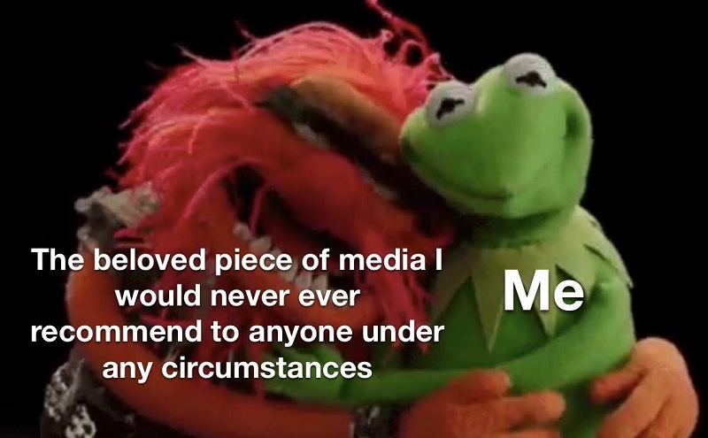
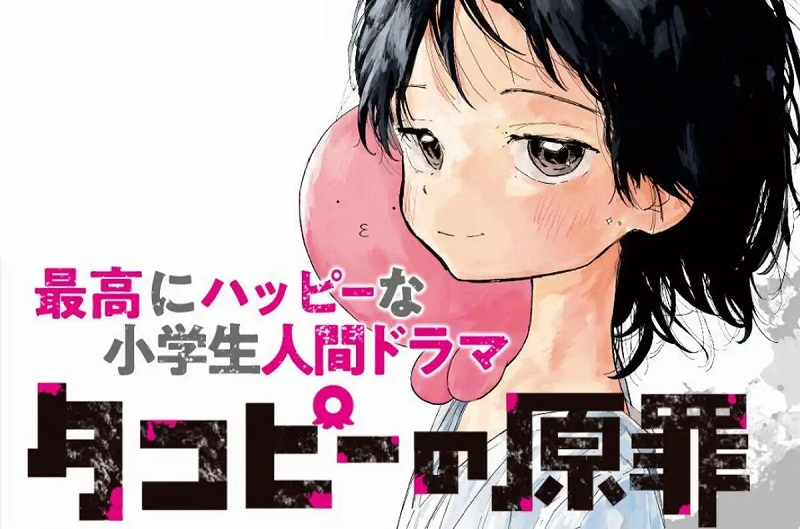
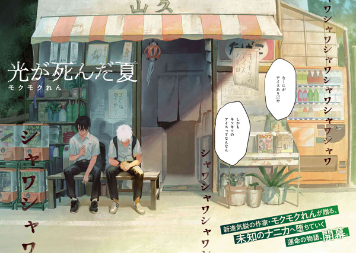
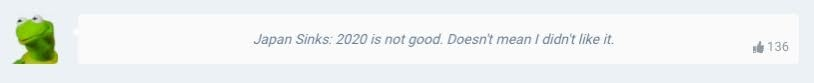
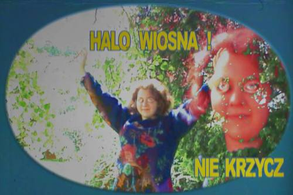
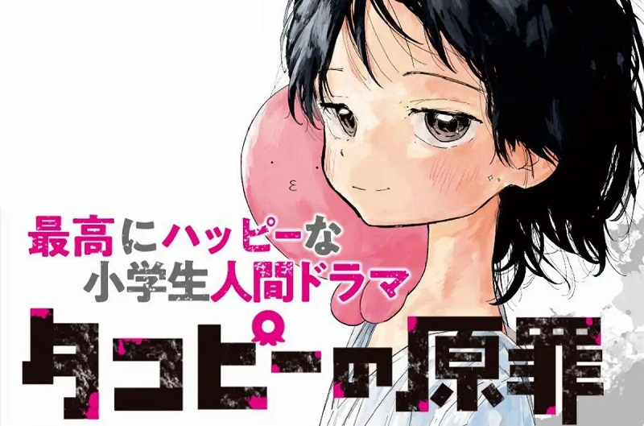
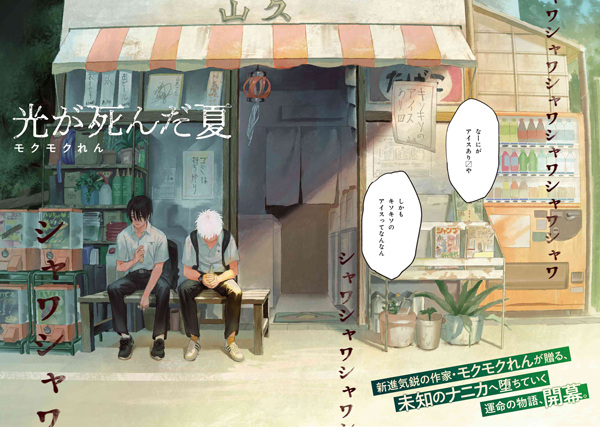
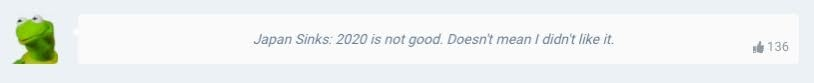
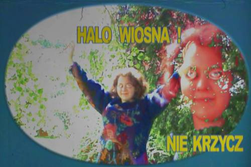

*This is tongue-in cheek. I cannot stress how subjective my taste is.
Welcome to my EVIL LISTICLE! These are things that hurt my soul, but still felt like a worthwhile experience.

Takopi's Original Sin
- PLOT: Octopus alien arrives on earth and tries to cheer up an extremely neglected and bullied girl.
- MOOD: Every chapter had my heart pounding (but NOT in a good way). The storyline feels hopeless, and the art induces a lot of dread despite being very simple. The plot twists feel really cheap, almost comical at times, but I was invested enough to read all 16 chapters.
- VERDICT: I can't recommend this in good faith, because it feels a little... exploitative? I mean, it's tagged as "gore" on MangaDex and is about 10 year-olds. It does have a happy ending at least!!

The Summer Hikaru Died
- PLOT: Guy's best friend (and unrequited crush) dies, but an evil spirit that looks and acts just like him comes back, so he tries to coexist with it.
- MOOD: The drama and horror escalate very quickly, and the art style is very disorienting.
- VERDICT: I've read other stuff by this mangaka, and they are very, very weird about women and m/m relationships, but it's (mostly) absent here. Mostly.

Japan Sinks 2020
- PLOT: Filipino-Japanese family (and other immigrants) try to survive an apocalyptic-level earthquake while also enduring intense xenophobia.
- MOOD: idk man I watched it with my family, and afterwards I realized, the show itself sucks, my enjoyment was coming from the people I was watching with.
- VERDICT: Not a single Filipino worked on this show. I hated it so much but I watched the entire thing twice in one day b/c I'm desparate for pinoy rep. Don't watch this unless you're also desparate.
Tissue Ablatian and Variant Regeneration: A Case Report by Michael Blumlein
- PLOT: In a sci-fi horror setting where criminals can give back to humanity by being disected alive (WITHOUT ANESTHESIA) for use of their body parts, Ronald Reagan is chosen to attone.
- MOOD: Very gross, very blunt, read it twice in a row #girl
- VERDICT: 10/10. He's reduced to only his head, lungs, heart, and stomach by the end.

Kraina Grzybów TV
- PLOT: 20th century PSA-style YouTube channel where a young girl, Agatka, and her squirrel friend, Maggie, guide the viewer through simple tasks.
- MOOD: Whenever I'm having a bad anxiety attack and need a distraction I watch this. It disturbs and confuses me and usually that is enough to calm me down. There have been moments in my life where I was bawling my eyes out, and then I pulled these videos up, and after a few minutes I'd stop crying.
- VERDICT: Recommending this purely for the visuals, I do not particularly care for the plot. Be warned that in episode 2 there is a jumpscare where Maggie calls Agatka and the viewer the r-slur.